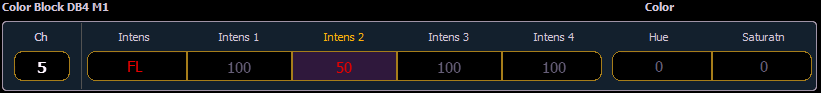
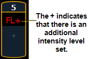

When a fixture with multiple intensity parameters is patched, Ion assigns it a master intensity. The master intensity can be used to control the multiple intensities together. The master intensity is handled in the same way as the intensity of a single intensity channel.
Levels can be set via the level wheel, from the keypad, and the encoders. The other intensities will default to 100%.
Control of the individual intensities of a multiple intensity channel is handled using the parameter buttons in the CIA (see Manual Control of Non-intensity Parameters (NPs) ) or the encoders (see Custom Control ). Levels assigned to the individual intensities will act independent of each other and the master intensity.
In Table view, Ion will default to showing all intensity parameters associated with the channels.

In summary view, the master intensity is shown. If one of the multiple intensities has a value, an ‘+’ will display beside the master intensity.
